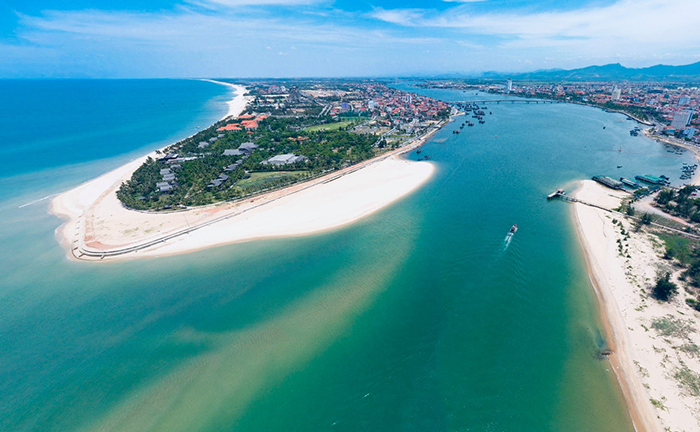
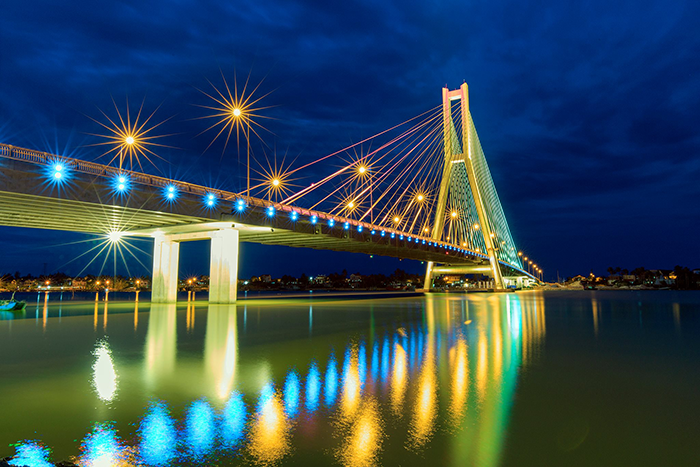

Biển Nhật Lệlà địa điểm du lịch Quảng Bình nổi tiếng khắp 3 miền. Nơi đây có thiên nhiên thơ mộng, bờ cát vàng óng, bãi biển rộng với làn nước trong xanh. Dù khá gần khu dân cư nhưng bãi biển này vẫn giữ được vẻ đẹp tự nhiên mà hiếm nơi nào có thể làm được.
Kinh nghiệm du lịch biển Nhật Lệ Quảng Bình chi tiết (Ảnh: Sưu tầm)
1. Biển Nhật Lệ ở đâu Quảng Bình?
Biển Nhật Lệ có vị trí khá đắc địa, gần cửa sông Nhật Lệ. Đây là một trong những địa điểm du lịch được đánh giá là đẹp nhất, thuận tiện đi lại vì chỉ cách trung tâm thành phố Quảng Bình khoảng 1km, cách ga Đồng Hới gần 5km và sân bay Đồng Hới hơn 8km.
Biển Nhật Lệ và kinh nghiệm du lịch Quảng Bình cho người mới (Ảnh: Sưu tầm)
2. Bãi biển Nhật Lệ có đẹp không, nên đi vào thời gian nào?
Biển Nhật Lệ may mắn được thiên nhiên tạo hóa ban tặng cho vẻ đẹp tự nhiên, không khí trong lành, mát mẻ, vì vậy bạn có thể tới đây vào bất cứ thời gian nào trong năm. Tuy nhiên, thời điểm đẹp nhất vẫn sẽ là vào tháng 5 đến tháng 8. Thời gian này nước biển vô cùng trong xanh, có nắng, ít mưa bão, điều kiện thời tiết thuận lợi để tắm biển, nghỉ dưỡng.
Bờ biển Nhật Lệ Quảng Bình đẹp nhất sẽ từ tháng 5 đến tháng 8 (Ảnh: Sưu tầm)
Điểm đặc biệt của bãi biển Nhật Lệ đó chính là dù nằm rất gần khu dân cư, nhưng vẫn giữ được vẻ hoang sơ, yên bình vốn có. Dạo bước bên bờ biển, hít thở không khí trong lành, nghe tiếng sóng vỗ vào bờ, sẽ mang tới cho bạn nhiều cung bậc cảm xúc khác nhau. Đây cũng là địa điểm check-in Quảng Bình được rất nhiều bạn trẻ yêu thí.
Vào những thời điểm hoàng hôn, bình minh khung cảnh nơi đây như được khoác một chiếc áo mới, vô cùng diễm lệ. Màn đêm buông xuống cũng là lúc thành thị bắt đầu lên đèn, những con thuyền đánh bắt cá sáng rực, chuẩn bị ra khơi. Đây sẽ là thời điểm đẹp nhất của bãi biển Nhật Lệ lung linh với đa dạng sắc màu.
3. Cách di chuyển đến bãi biển Nhật Lệ Quảng Bình
- Tàu Hỏa:
- Xe Khách
- Máy Bay
Theo kinh nghiệm đi biển Nhật Lệ của mình, nếu bạn là người thích khám phá, trải nghiệm cảnh đẹp trên suốt hành trình đến biển Nhật Lệ, thì hãy chọn tàu hỏa. Sẽ có 2 loại vé là giường nằm và ghế ngồi, tùy thuộc vào tài chính mà bạn có thể lựa chọn loại hình phù hợp nhất. Giá vé sẽ khoảng từ 350.000 - 1.400.000 VNĐ/chặng.
là phương tiện di chuyển di chuyển tiện lợi, giá tốt mà bạn có thể tham khảo. Thông thường một chuyến xe khách từ Hà Nội - bến xe Đồng Hới sẽ rơi vào khoảng 250.000 VNĐ/vé và từ Sài Gòn - Đồng Hới là 600.000 VNĐ/vé, tùy thuộc vào loại xe và chỗ ngồi bạn lựa chọn.
Đây là phương tiện di chuyển nhanh chóng nhất để tới Quảng Bình. Hiện nay, đã có rất nhiều đường bay từ các thành phố như: Hải Phòng, Hà Nội, Nha Trang, thành phố Hồ Chí Minh tới đây. Giá vé sẽ dao động từ 1.500.000 - 2.000.000 VNĐ/chuyến.
Bạn có thể di chuyển tới Quảng Bình bằng máy bay, sau đó từ sân bay tới bãi biển Nhật Lệ cách đó khoảng 8km (Ảnh: Sưu tầm)
4. Những địa điểm du lịch gần bãi biển Nhật Lệ Đồng Hới
Bãi biển Nhật Lệ Đồng Hới là một trong những địa điểm du lịch Quảng Bình vô cùng hấp dẫn, với nhiều điều thú vị đang chờ bạn khám phá.
4.1. Cầu Nhật Lệ
Cầu Nhật Lệ là cây cầu dài nhất Quảng Bình, bắc ngang qua dòng sông Nhật Lệ. Từ trên cầu Nhật Lệ bạn có thể chiêm ngưỡng được toàn cảnh dòng sông tĩnh lặng, ôn hòa với hai bên bờ thành phố đầy sôi động.

Cây cầu Nhật Lệ về đêm với hàng ngàn ánh đèn lung linh (Ảnh: Sưu tầm)
Biển Nhật Lệ là địa điểm nổi tiếng, nhất định phải ghé trong bản đồ du lịch Quảng Bình. Bên cạnh biển Nhật Lệ, Quảng Bình còn rất nhiều điều kỳ thú, điểm vui chơi hấp dẫn, nền ẩm thực đa dạng đang chờ bạn khám phá.